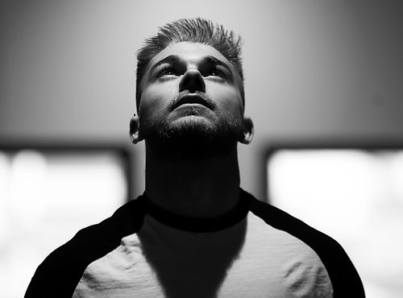
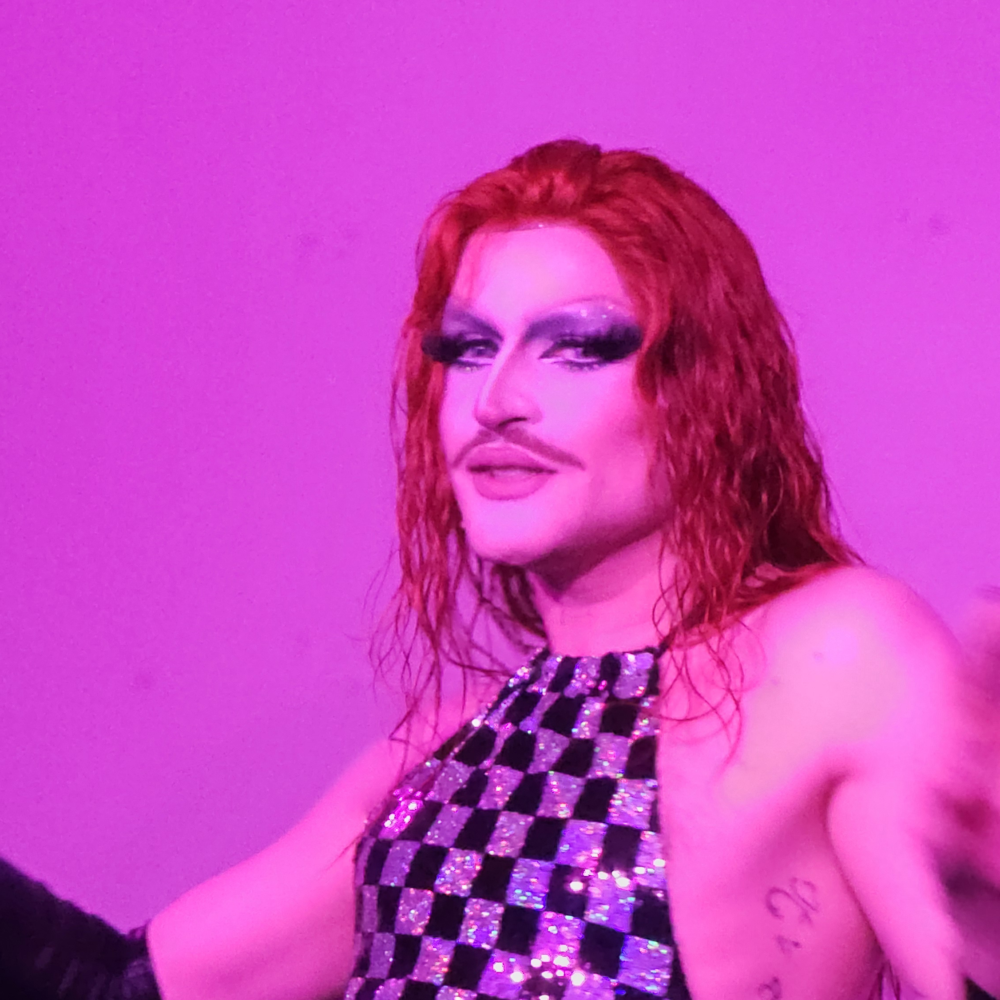

Les Artistes
***
Des DJ sets de folie avec :
Goldie
Créature déjà bien connue de la scène lyonnaise pour ses DJ sets endiablés des soirées Garçon Sauvage, Goldie vous accueillera avec un warm up haut en couleurs !
La Poison
Le Trio Rock Electro Chimique La Poison pose ses valises dans l'Hôtel de Ville ! Moon, Lars Sonik et Fugu Shima viennent tout droit du futur pour nous avertir des dangers qui nous guettent sur des airs plus rock que jamais !

DJ Spécial Guest Mystère
Nous avons hâte de vous dévoiler notre DJ guest mystère de renommée internationale, mais en attendant ... Chut !
ISA
DJ et programmatrice musicale d'Arm Aber Sexy, elle saura prolonger la soirée comme il se doit !

Neo Désir
Alliant sons personnels et dansants autour de la ligne disco basse alliant synthés et techno chaleureuse, Neo Désir clôturera la soirée en beauté pour vous laisser un souvenir impérissable de ce bal incroyable !
Et des artistes drags incroyables :
Zanni Lalune
Artiste de cabaret professionnel et dragking depuis plus de 5 ans, membre du coolectif La Cousinade, passionné par l’esthétique baroque et la Commedia dell’Arte, Zanni Lalune saura vous émouvoir et vous transporter vers des astres insoupsonnés !
Vernita Green
Pin-up barbue également membre du coolectif La Cousinade, Vernita Green se plait à sortir de la brume sur des airs de jazz, tant pour vous envoûter que pour vous faire rire aux larmes !
Border Gender
Sa devise ? "Borderline but make it drag!". Qu'il s'agisse d'aborder des sujets comme la santé mentale ou des sujets plus légers, Border Gender sera au rendez-vous !

Mogan Tox
Tantôt envoûtante, tantôt déroutante, Mogan Tox sous ses airs félins ne vous laissera pas une minute de répit !

Armand Crevure
Dragking poète se rêvant Elvis de Vegas, laissez-vous captiver par les vers d'Armand Crevure... À vos risques et périls !
 (arrêt Hôtel de Ville)
(arrêt Hôtel de Ville)